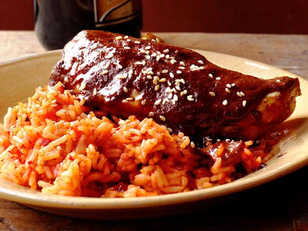

Servings
Ingredients
- 1 chicken (3 to 4 pounds), cut into 6 pieces
- 5 black peppercorns
- Kosher salt
- 1/2 cup sesame seeds
- 5 whole cloves
- 1 cinnamon stick
- 1/2 teaspoon anise seeds
- 1/4 teaspoon coriander seeds
- 6 dried guajillo chile peppers
- 4 dried ancho chile peppers
- 6 tablespoons canola oil
- 1/4 cup raisins
- 1/4 cup whole blanched almonds
- 1/4 cup hulled pumpkin seeds
- 2 6-inch corn tortillas, torn into pieces
- 1 2.7-ounce disk Mexican chocolate, broken into pieces
- Pinch of sugar
Steps
- Put the chicken and peppercorns in a large pot, cover with water and season with salt. Bring to a gentle simmer over low heat and cook until tender, about 40 minutes. Transfer the chicken to a large plate and set the cooking liquid aside.
- Toast the sesame seeds in a dry skillet over medium heat, tossing, until golden, about 5 minutes. Set aside 2 tablespoons for garnish and transfer the rest to a blender. In the same skillet, toast the cloves, cinnamon stick, and anise and coriander seeds until fragrant, about 3 minutes. Add to the blender.
- Remove the stems and seeds from the dried chile peppers. Heat 4 tablespoons canola oil in the same skillet over medium heat. Add the chiles and fry until lightly toasted, about 2 minutes. Transfer to a bowl, cover with hot water and set aside to soak until pliable, about 30 minutes.
- Meanwhile, add the raisins, almonds, pumpkin seeds and tortilla pieces to the oil in the skillet and cook, stirring, until the seeds and tortillas are golden brown, about 2 minutes. Add to the blender along with the oil from the skillet. Add the softened chiles and puree, pouring in 2 to 3 cups of the soaking liquid to make a thick, smooth sauce.
- Heat the remaining 2 tablespoons oil in a large pot over medium-high heat. Add the chile sauce and fry, stirring, until thickened, 5 to 6 minutes. Add 4 cups of the reserved chicken cooking liquid and simmer until the sauce starts to thicken, about 20 minutes. Add the chocolate and simmer, stirring frequently, until the chocolate melts and the sauce reduces, about 20 more minutes. Add the sugar and season with salt.
- Add the chicken pieces to the sauce and warm through over low heat. Garnish with the reserved sesame seeds.
Return to top
Return to Mexico Recipes
Return to Menu